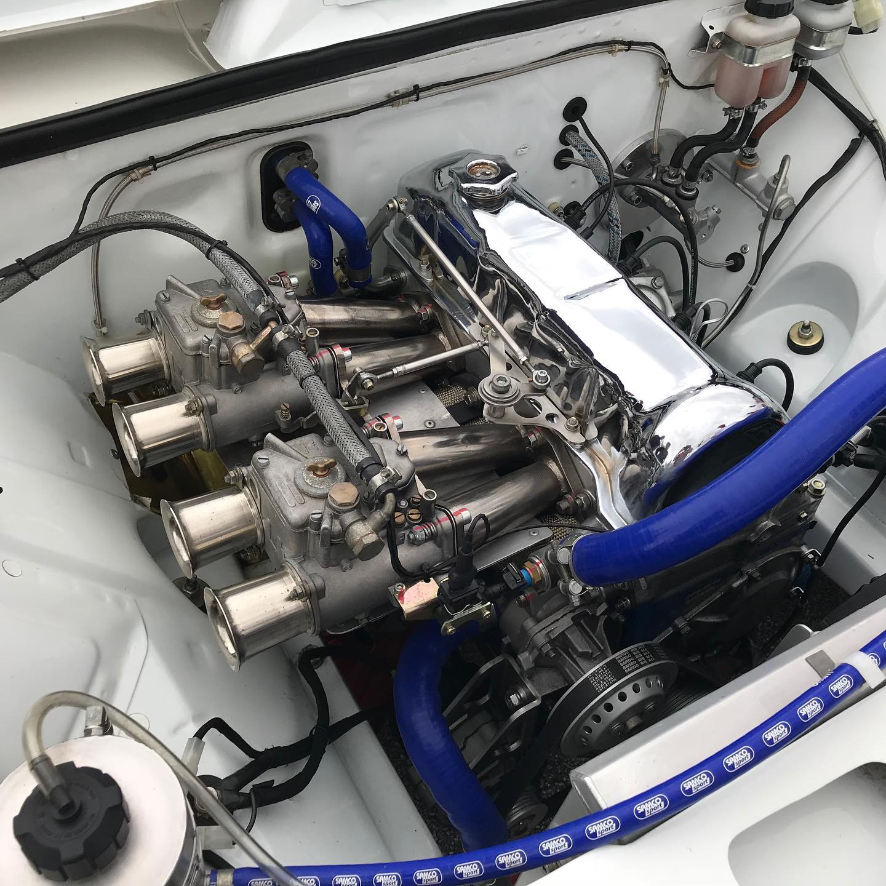

A régebbi típusú Ladákat jellemzően ugyanazzal a motorblokkal szerelték, csak a löketük és a hengerfuratuk tért el. A váltó és önindító felfogatásuk egyforma, ezért egymással felcserélhetőek.
Az alábbi képen egy verseny Ladába beépített 21213-as motorkódú motor látható, dupla Weber karburátorral.
| Motorkód | Lökettérfogat | Vezérlés típusa |
|---|---|---|
| 2101 | 1200 ccm | Láncos |
| 2103 | 1500 ccm | Láncos |
| 2105 | 1300 ccm | Szíjas |
| 2106 | 1600 ccm | Láncos |
| 21213 | 1700 ccm | Láncos |
Forrás: Wikipédia